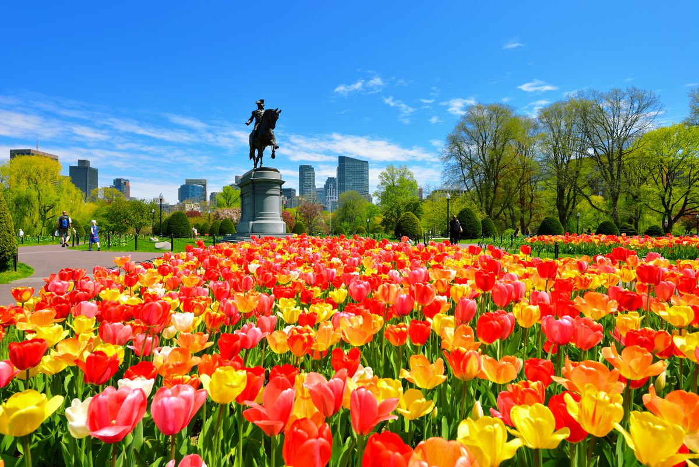
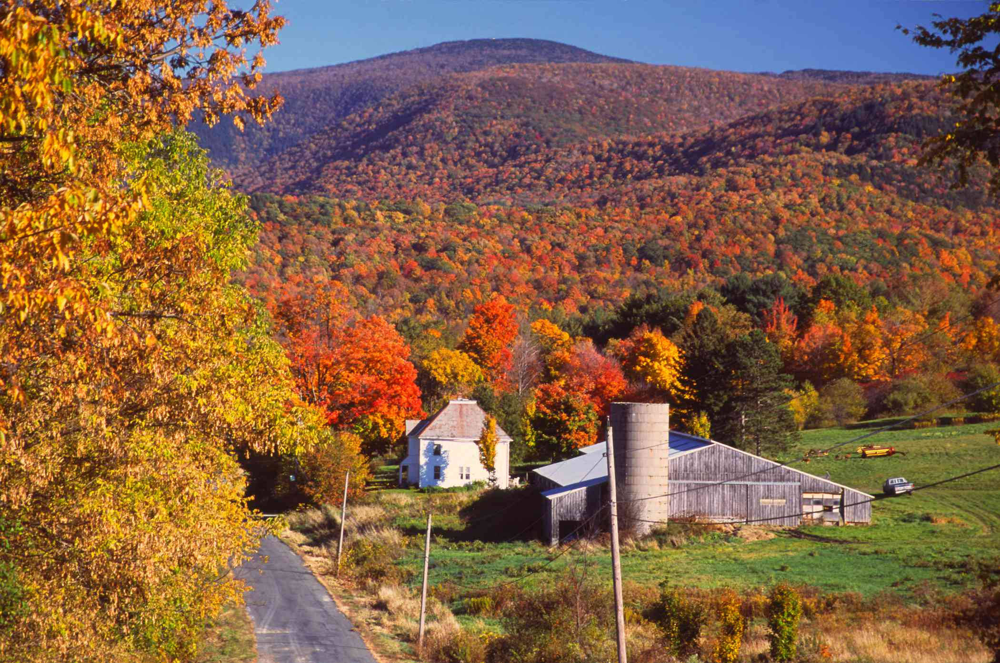

Spring
Spring in Massachussetts is rather late, but short and intense (April-May). It starts with blooming cherry and magnolia trees and ends in May with the Rhododendron.
We recommend a stroll through the Boston Common and the Public Garden to take in all the colors, flowers and spring vibes. Another great excursion is walking along the Charles River and looking out for the offspring of the birds that live there.
Summer

The Summer in Massachussetts are hot, humid and sunny. With July being the hottest month of the year, with an average temperature of 75-85 fahrenheit, the heat can get uncomfortable sometimes, but since Boston is coastal the beach is a great way to cool off!
You can catch a breeze at Massachussett's famous beaches, for example Cranes Beach, Wingaersheek Beach or Cape Cod! Other activities are renting a sail boat at CBI on the Charles River or enjoying some ice cream in Harvard Square.
Fall
The Fall in Massachussetts is called "Indian Summer". It is extremely beautiful and a hiker's dream! The colors of the foliage are so intense that it almost feels magical and unreal.
A favorite fall activity is apple picking! There are plenty of farms full of hay rides, apple-cider donuts and of course delicious apples of all kinds. Another way to experience the full foliage beauty is to take a day trip to Western Massachussetts! Go by car or by bike and enjoy the most famous fall there is!
Winter
The Winter in Massachussetts is harsh and cold with lots of snow! It will start to get cold towards the end of November, with January being the coldest month of the year. A typical snowstorm, a "Nor'easter", can drop more than one foot of snow.
With the Winter being so authentic winter sports like skiing, snowboarding, sledding and snowshoeing are a must. There are small ski-resorts around Boston, but for an even better experience you can go to different states in New-England, like Maine or Vermont.